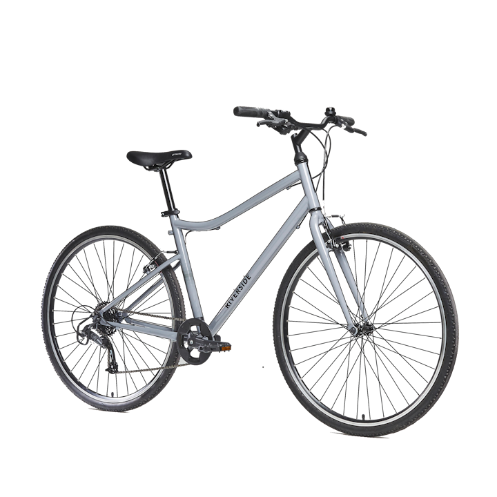

Aqui te enseñamos algunos modelos junto a su precio, que contendrán su enlace a la tienda donde puedes conseguirlas ademas de una breve descripción sobre ellas
Elops 520 Cuadro bajo
Para pedalear con mayor comodidad por la ciudad durante tus trayectos ocasionales, esta bicicleta Elops también te ofrece un nivel completo de equipamiento. Nuestro equipo de diseñadores/as ha diseñado esta cómoda bicicleta para trayectos urbanos ocasionales, equipada para un transporte totalmente seguro.
Por 349,99 €
Elops 900
Esta bicicleta eléctrica ofrece una gran comodidad gracias a su horquilla con suspensión y a su posición típica de las bicis holandesas. Su autonomía te permite recorrer de 40 a 70 km. Nuestro equipo de apasionados ha creado esta bici con asistencia eléctrica (BAE) para facilitar trayectos urbanos: ¡gana comodidad y circula sin esfuerzo!
Por 999,99 €
Riverside 120
Cambia de velocidades fácilmente, con un solo gatilloSu sillín, su manillar ergonómico y su posición de 60º optimizan el confort. Bicicleta versátil y cómoda para tus paseos ocasionales en carriles bici, carreteras y caminos.
Por 259,99 €
Elops 520 Cuadro alto
Para circular aún más cómodo/a por la ciudad durante tus trayectos regulares, esta bicicleta Elops también te ofrece un nivel completo de equipamiento. Nuestro equipo de diseñadores/as ha diseñado esta cómoda bicicleta para trayectos urbanos ocasionales, equipada para un transporte totalmente seguro.
Por 299,99€